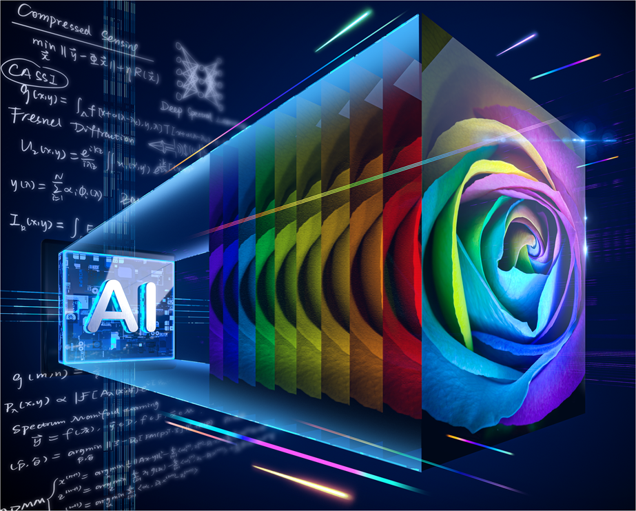
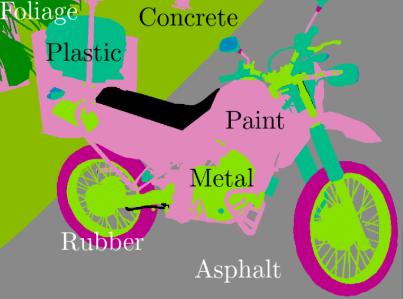
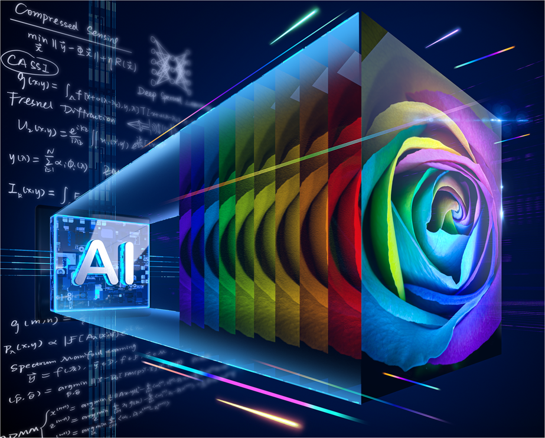
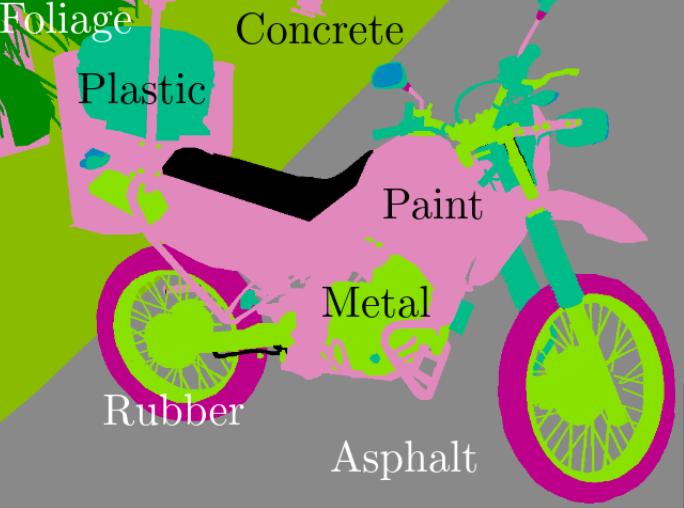

Semillero Hands-on Computer Vision
 



Explora el Futuro de la Visión por Computadora
Únete a nosotros en el Semillero "Hands-on Computer Vision" y sumérgete en una experiencia única que fusiona la teoría con la práctica en el fascinante mundo de la visión por computadora. Nos enfocaremos en temas avanzados como Fotografía computacional, Aprendizaje profundo, Imágenes térmicas, Imágenes espectrales, Estimación de la profundidad y más. Este semillero te brindará la oportunidad de adentrarte en las tecnologías de vanguardia, utilizando herramientas como OpenCV y Python.
Áreas de investigación
Imágenes sin visibilidad directa
Segmentación de materiales
Imágenes espectrales
Estimación de la profundidad
Vehículos autónomos
Imágenes térmicas
Cronograma
Todas las sesiones se llevarán a cabo los días lunes de 4:00 p.m. a 6:00 p.m en la UIS a partir del 4 de marzo
| Fecha | Título | Descripción |
|---|---|---|
| Marzo 4 | Piloto | Esta sesión es introductoria al semillero en general |
| Marzo 11 | De fotones a pixeles | Generalidades sobre la adquisición y procesamiento digital de imágenes |
| Marzo 18 | Deep Learning | Despierta el poder de la inteligencia artificial en la visión por computadora |
| Abril 1 | Imágenes espectrales | Conoce los secretos que hay mas allá de una imagen de color |
| Abril 8 | Estimación pasiva de la profundidad | Explora las técnicas de estimación de profundidad sin fuentes externas |
| Abril 15 | Estimación activa de la profundidad | Extrayendo profundidad con precisión milimétrica a partir de la luz |
| Abril 22 | Definición de proyectos | Rétate a ti mismo 🔥🔥 |
| Abril 29 | Segmentación | Delineando el mundo digital a través de píxeles clasificados meticulosamente |
| 🌴 Vacaciones 🌴 |
||
| Agosto 26 | Imágenes térmicas | El mundo visto a través del calor |
| Septiembre 2 | Sustentación de proyectos | Desafía tus habilidades 🚀 🚀 |
Participa en el Semillero
¿Listo para unirte? Inscríbete y comienza a explorar el apasionante campo de la visión por computadora con nosotros que comenzará el 4 de marzo de 2024.
La fecha de inscripción ya finalizó.
Realizado por:
Hoover Fabian Rueda Chacón
Ingeniero de Sistemas e Informática, con maestría y doctorado en Ingeniería Eléctrica y Computación. Realizó su formación en Colombia y EE. UU., siendo Asociado Postdoctoral en la Universidad de Boston. Sus áreas de investigación incluyen procesamiento de imágenes, algoritmos, óptica computacional y optimización numérica.
Nelson Fabian Pérez Pérez
Estudiante de Ingeniería de Sistemas e Informática
Cristhian Camilo Rey Rueda
Estudiante de Ingeniería de Sistemas e Informática
Ramiro Santiago Ávila Chacón
Estudiante de Ingeniería de Sistemas e Informática
Miguel Ángel Molina Garzón
Estudiante de Ingeniería de Sistemas e Informática
Oscar Ivan Torrens Bustamante
Estudiante de Ingeniería de Sistemas e Informática
! Únete al canal de Discord !